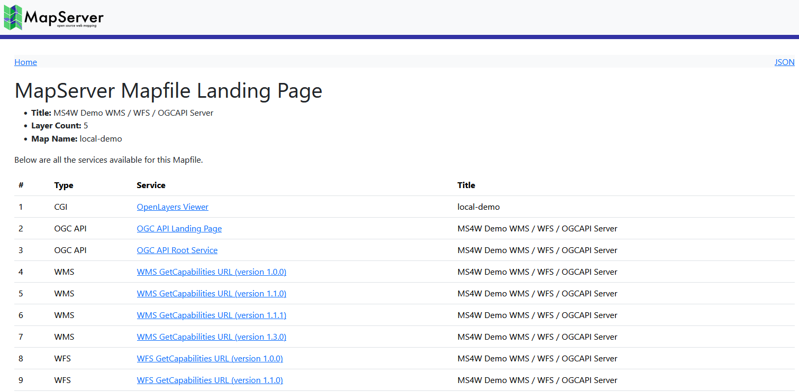

MapServer Migration Guide¶
- Last Updated:
2026-05-07
Tip
Review MapServer’s Security Policy, and also check if there are any recently published vulnerabilities.
MapServer 8.4 to 8.6 Migration¶
The 8.6.4 release includes fixes for two vulnerabilities, see the advisories:
OpenLayers viewer with WMS advisory
PostGIS support advisory
The 8.6.3 release includes a fix for a vulnerability in the SLD parser (see MapServer’s Security Advisory)
Reminder: you can also disable external SLD access for your WMS services by setting the following in your mapfile:
MAP ... WEB METADATA "wms_sld_enabled" "false" ... END #metadata END #web ...
The 8.6.2 release includes a fix for a vulnerability in the OpenLayers viewer (see MapServer’s Security Advisory)
The 8.6.1 release includes a fix for a vulnerability in the SLD parser (see CVE record: CVE-2026-33721, or see MapServer’s Security Advisory)
You can now enable an automatically generated index page, that lists all of your OGC services and endpoints, for each mapfile that you defined in your CONFIG file. To enable the index, add MS_INDEX_TEMPLATE_DIRECTORY to your environment variables section of the CONFIG file, such as:
ENV # # Index page # MS_INDEX_TEMPLATE_DIRECTORY "/ms4w/share/ogcapi/templates/html-index-bootstrap/" END

See also
A new IDENTIFY object can be used in a mapfile to control how features are found through queries, to account for the actual symbol being used for that CLASS. This could be useful for WMS GetFeatureInfo requests.
MAP ... WEB METADATA "wms_title" "My WMS Server" ... END #metadata END #web ... SYMBOL NAME "mysvg" TYPE svg IMAGE "./ttt.svg" END #symbol ... LAYER IDENTIFY CLASSGROUP "test" END #identify CLASS GROUP "test" STYLE ANGLE 30 SYMBOL "mysvg" END #class END #layer ... END #map
See also
original Pull Request #7318
FALLBACK has been added to the CLASS object, to allow that class to be used if no other class can be applied.
MAP ... LAYER ... CLASS NAME "test1" ... END #class CLASS NAME "test2" ... END #class CLASS NAME "test3" ... FALLBACK TRUE END #class END #layer ... END #map
See also
original Pull Request #7309
OGC API : Features has been enhanced to allow the appending of additional query parameters to all URLs generated through the API, by defining the ows_extra_params parameter in the mapfile’s WEB.METADATA object.
MAP ... WEB METADATA "ows_title" "My OGCAPI Server" ... "oga_html_template_directory" "../../share/ogcapi/templates/html-bootstrap/" "ows_extra_params" "token=123" END #metadata END #web ... LAYER ... END #layer END #map
All subsequent URLs available through OGCAPI: Features will contain that token=123, such as:
http://127.0.0.1/cgi-bin/mapserv.exe/local-demo/ogcapi/collections/ocean/items?f=json&token=123
Tip
For sensitive parameter values, you should enable Run-time Substitution to not store passwords and other tokens in mapfiles. See steps at OGCAPI: Features metadata.
See also
original Pull Request #7360
MapServer 8.2 to 8.4 Migration¶
The 8.4.1 release includes a fix for a vulnerability for WFS filter requests to an OGR backend connection (see CVE record: CVE-2025-59431, or MapServer’s Security Advisory)
MapServer now requires at least CMake version 3.16 for building
you can now build against the PCRE2 library (WITH_PCRE2=ON)
reminder that since the PROJ 9.1 release, the former PROJ_LIB variable has been replaced with PROJ_DATA
See also
Setting the location of PROJ files in PROJECTION.
Tip
For Windows users, MS4W >=5 leverages the PROJ_DATA environment variable, which points to /ms4w/share/proj/
MapServer 8.0 to 8.2 Migration¶
The 8.2 release includes a fix for a security flaw for regex validation (CVE has been requested)
The GitHub repository has been restructured to move all source code into the /src folder
The unused sym2img commandline utility has been removed
support for GDAL < 3 has been removed
support for PROJ < 6 has been removed
MapServer 7.6 to 8.0 Migration¶
The former shp2img commandline utility has been renamed to map2img
Every MapServer installation as of the 8.0.0 release will require a CONFIG file.
Tip
For example, compiling from source on Ubuntu, by default MapServer will install a sample config file at /usr/local/etc/mapserver-sample.conf, and you must rename that file to mapserver.conf.
Tip
For MS4W users (version >= 5), the config file can be found at /ms4w/ms4w.conf
Old native PHP MapScript has been removed, in place of PHPNG (SWIG) MapScript. Follow the MapScript SWIG API documentation. Compiling SWIG master from GitHub is recommended.
Tip
The MS4W community has produced many code examples of PHPNG (SWIG) MapScript: https://ms4w.com/trac/wiki/MigrationGuide5.x
To follow the WMS specification, the STYLES parameter will now be required for GetMap requests. To bypass this requirement, you can set wms_allow_getmap_without_styles in your WMS Server mapfile, such as:
MAP ... WEB METADATA "wms_title" "My WMS Server" ... "wms_allow_getmap_without_styles" "true" END #metadata END #web ... END #map
Several deprecated mapfile parameters have been removed, and will throw an error if you still specify them now. The following are specific examples to be aware of (but be sure to review the full list), taken from the MS4W migration guide:
DUMP TRUE
Instead, you can configure querying of your layer by using METADATA instead, such as:
LAYER ... METADATA "wms_title" "Populated Places" "wms_include_items" "all" "gml_include_items" "all" "gml_featureid" "ogc_fid" END #metadata ... END #layer
OPACITY at the LAYER-level
Instead it must be inside a COMPOSITE object:
LAYER ... COMPOSITE OPACITY 40 END #composite END #layer
COLOR at the CLASS-level
Instead it must be inside the class’ STYLE object:
LAYER ... CLASS ... STYLE COLOR 120 120 120 END #style END #class END #layer
Direct changing of mapfile parameters through the URL has been removed as of the 8.0.0 release. You can still however handle this through Run-time Substitution, but with a more limited list of supported mapfile parameters (see related discussion). Here is an example CGI request pre-8.0 release:
...&map.layer[county].class[0].label[0]=SIZE+24&...
Using the LABEL WRAP parameter with MAXLENGTH 0 to always wrap at the wrap character is no longer supported (as there are more strict checks in MapServer >= 8 for negative or zero values), so instead you can remove (or comment) that MAXLENGTH 0 line, and MapServer will wrap at the character, such as:
LAYER NAME "wrap-no-maxlength" CLASS LABEL TYPE truetype ANGLE follow FONT "dejavu" SIZE 8 COLOR 0 0 0 #MAXLENGTH 0 #would cause error in MapServer >=8 WRAP "|" END #label ... END #class ... FEATURE POINTS 50 -450 150 -450 END #points TEXT "W: WrapSpace|With Pipe" END #feature END #layer
so the label will appear in the map image as:
Reminder: every mapfile LAYER should include a NAME parameter. The NAME should not contain special characters, or spaces, or begin with a number. This simple name is important for your downstream users (such as through OGC services).
LAYER NAME "mylayer" #strongly recommended GROUP "mygroup" ... END #layer
MapServer 7.4 to 7.6 Migration¶
MapServer now requires at least CMake version 3.0 for building
PointZM data support (X,Y,Z,M coordinates) is now enabled by default
the PROJ 6 API is now supported. Read about the many changes in PROJ since the PROJ 6.0 release. Note that older PROJ versions such as 5.2.0 will still work with MapServer.
Tip
Here are the (as of 2021-07-13) optimal combinations of MapServer with GDAL & PROJ:
MapServer 7.6.4 + GDAL 2.4.4 + PROJ 5.2.0 (GDAL 2 series) MapServer 7.6.4 + GDAL 3.3.1 + PROJ 8.1.0 (GDAL 3 series)
CONNECTIONOPTIONS parameter has been added in the mapfile LAYER, to take advantage of GDAL/OGR driver options. (see RFC 125) such as:
LAYER NAME "test" CONNECTIONTYPE OGR CONNECTION "./data/nested_attrs.geojson" CONNECTIONOPTIONS "FLATTEN_NESTED_ATTRIBUTES" "YES" END [...] END
new processing directive RENDERMODE (added through RFC 124 SLD changes) to enable a ‘painters model’ where all classes for a layer are drawn at once with a ALL_MATCHING_CLASSES setting, such as:
LAYER NAME "test" CONNECTIONTYPE OGR CONNECTION "./data/nested_attrs.geojson" PROCESSING "RENDERMODE=ALL_MATCHING_CLASSES" CLASS ... END CLASS ... END CLASS ... END END
More information in issue 5839.
Note
RFC 124 (SLD improvements) has been implemented except PR#5832: SLD: Improve WMS GetStyles request.
WMS client layers can be set to essential, with the new wms_essential metadata item, which will cause MapServer to fail and report an error (normally MapServer would just ignore that layer).
Note
enabling wms_essential means that if there is a problem with the connection, (such as the CONNECTION url cannot be reached, or an incorrect wms_name or wms_format) an XML error will be returned in the browser. If you are calling MapServer through commandline, your MAP setting for CONFIG “ON_MISSING_DATA” will still be leveraged for how that error is handled locally.
Here is an example of the new wms_essential parameter:
LAYER NAME "country_bounds" TYPE RASTER STATUS ON CONNECTION "https://demo.mapserver.org/cgi-bin/wms?" CONNECTIONTYPE WMS METADATA "wms_srs" "EPSG:4326" "wms_name" "country_bounds" "wms_server_version" "1.1.1" "wms_format" "image/png" "wms_essential" "1" END END
Windows users can now use umlauts (special characters such as ä ö ü) in their directory paths and filenames, such as:
LAYER .. DATA "ä1-test.tif" .. END #layer
MapServer 7.2 to 7.4 Migration¶
PHP 7 MapScript support: users are recommended to switch to MapServer’s new SWIG API support of PHP 7+ (reason for recommendation: as we saw with the breaking PHP 7 changes, managing PHP through SWIG will be easier on the MapServer maintainers in the long run.) Some important SWIG notes:
you will require at least SWIG-3.0.11 (but 4.0.0 is recommended).
if you notice any missing functions that were available in the old native PHP MapScript API, first please check the SWIG API reference document for an alternative function to use, and if there is nothing similar available then file a ticket for each function that you require.
all of your PHP scripts (that leverage MapServer objects and functions) must now always first include the generated mapscript.php file containing MapServer constants:
// required SWIG include (contains MapServer constants for PHP7) include("C:/ms4w/apps/phpmapscriptng-swig/include/mapscript.php");
take note of the change in how to declare your new objects:
// open map $oMap = new mapObj("C:/ms4w/apps/phpmapscriptng-swig/sample.map");instead of the former way:
// open map $oMap = ms_newMapObj("C:/ms4w/apps/phpmapscript/sample.map");
MapServer 7.0 to 7.2 Migration¶
LABEL->PARTIALS now defaults to “FALSE” instead of “TRUE” which implies that by default labels that do not fully fit in the map image will be discarded.
MapServer 6.4 to 7.0 Migration¶
The predefined field names for the union and cluster layers have been changed. Colons in the field names have been replaced with underscores to avoid producing invalid GetFeatureInfo results. The field names in the mapfiles should be modified according to this change.
Layer FILTERs must use MapServer expression syntax only. Drivers will attempt to translate from MapServer syntax to native syntax (e.g. SQL). Native expressions can still be set either using: 1) sub-selects in the DATA statement or 2) using the new NATIVE_FILTER processing key.
# OGR Layer Before LAYER ... FILTER 'where id=234' END # OGR Layer After LAYER ... PROCESSING 'NATIVE_FILTER=id=234' END
MapServer attribute queries (e.g. mode=item[n]query) must be specified using MapServer expression syntax (qstring and qitem (opt)). For RDBMS backends you no longer send SQL snippets, rather the underlying driver will attempt to translate the expression to native syntax (e.g. SQL). If translation fails (or the driver doesn’t support translation) then MapServer will evaluate the expression instead.
Layer opacity is now deprecated a result of RFC 113 - Layer Compositing. The mapfile parser and MapScript getter/setter functions will continue to function but unpredictable results will occur if used in conjunction with COMPOSITE blocks. For more information see https://mapserver.org/development/rfc/ms-rfc-113.html.
# Before LAYER ... OPACITY 70 END # After LAYER ... COMPOSITE OPACITY 70 END END
Handling of non UTF-8 encoded datasources has changed with RFC103. Mapfiles now must be saved in UTF-8 encoding, and requests returned by MapServer will always be UTF-8 encoded. Various “xxx_encoding” metadata entries used to hack around non UTF-8 encoded datasources are now obsolete, and have been replaced by a LAYER-level ENCODING keyword.
Native ESRI SDE layers are no longer supported (see https://github.com/MapServer/MapServer/pull/5068). OGR remains an alternative for those that really need it although the OGR/SDE driver suffers from the same issues that prompted the removal from MapServer.
GD graphics library support was removed (https://mapserver.org/development/rfc/ms-rfc-99.html) and had been optional since 6.2.
GIF output cannot be produced from MapServer although 8-bit PNG output can be be produced using the AGG/PNG8 driver.
Bitmap fonts have been replaced with an embedded TrueType font (see https://mapserver.org/development/rfc/ms-rfc-104.html)
RFC 98 - Label/Text Rendering Overhaul (https://mapserver.org/development/rfc/ms-rfc-98.html) may result in subtle label/character placement changes. Support for negative MAXLENGTH that implied forced linebreaks is not supported anymore, workaround implies pre-processing such labels to include linebreaks or wrap characters.
ExternalGraphics added through SLD must now validate against the “sld_external_graphic” entry of the MAP->WEB->VALIDATION block
MAP WEB VALIDATION "sld_external_graphic" "^/path/to/symbols/.*png" END END END
MapServer 6.2 to 6.4 Migration¶
MapServer now must be built with the CMake tool. Build instructions are included in the INSTALL_CMAKE.md file in the source directory. You will need to have CMake installed on your system. Users of mapscripts (except PHP) will also need SWIG to be installed.
The “ows_extent” layer metadata is not used anymore to obtain georeferencing information for unreferenced raster data. Please use the “extent” layer key instead
LAYER ... EXTENT -180 90 180 90 END
Validation patterns cannot be specified in metadata blocks (i.e. using xxx_validation_pattern and default_xxx metadata entries), use VALIDATION blocks. see #4596 #4604 #4608 or Run-time Substitution
WFS paging parameter startIndex changed to base on 0 instead of 1 (0 is the first feature). See #4180 for external references.
Template substitution tags were case-sensitive, they are now case-insensitive.
MapServer 6.0 to 6.2 Migration¶
This section documents the changes that must be made to MapServer applications when migrating from version 6.0.x (or earlier versions) to 6.2 (i.e. backwards incompatibilities), as well as information on some of the new features.
Build system changes¶
If you are building MapServer from source, then the following may be of interest to you:
Use of libtool: In version 6.2, the Unix/Linux build scripts and Makefiles were converted to use libtool. One impact of this change is that the ‘mapserv’ file in the main source tree is a libtool wrapper script and not the actual binary. To use ‘mapserv’ you actually have to use ‘make install’ and then point to the installed binary. More info is available in the Compiling on Unix document at https://mapserver.org/installation/unix.html#installation
The –with-php configure option has been changed to point directly to the php-config script instead of to the directory where the PHP headers are located.
CGI Changes¶
Changing MIN/MAXSCALE or MIN/MAXSCALEDENOM via URL is no longer supported.
The syntax for changing a LABEL with CGI commands has changed along with the ability to support multiple labels The previous syntax …&map.layer[0].class[0]=label+color+255+0+0+end&… is replaced with …&map.layer[0].class[0].label[0]=color+255+0+0&… Note that cgi label modifications are/were broken in 6.2.0 and fixed in 6.2.1
Rendering changes¶
STYLE->GAP interpretation Starting in 6.2, STYLE->GAP specifies the gap between the symbols using the centre to centre distance. In earlier versions of MapServer, GAP was used as the approximate distance between the symbol boundaries. See ticket #3867 for more information.
In order to get the same effect with 6.2 as with 6.0, STYLE->GAP must be increased with the size of the symbol.
Removal of one pixel gap between symbols In earlier versions of MapServer, an extra gap of one pixel was added between the symbols (in addition to the gap specified in STYLE->GAP). This has been discontinued in 6.2. See ticket #3868 for more information.
In order to get the same effect with 6.2 as with 6.0, STYLE->GAP must be increased with one pixel.
STYLE->INITIALGAP introduced Support for more powerful line styling has been provided with the introduction of STYLE->INITIALGAP. See ticket #3879 and the documentation for more information.
SYMBOL->ANCHORPOINT introduced A symbol anchorpoint has been introduced to facilitate precise positioning of symbols. See ticket #4066 and the documentation for more information.
Change in vector symbol size calculation. In 6.2, vector symbol coordinates are shifted to get rid of negative x and y coordinate values. See ticket #4116 for more information.
In order to get the shifting effect that could be obtained using negative coordinate values, SYMBOL->ANCHORPOINT should be used instead.
MapServer 5.6 to 6.0 Migration¶
This section documents the changes that must be made to MapServer applications when migrating from version 5.6.x (or earlier versions) to 6.0 (i.e. backwards incompatibilities), as well as information on some of the new features.
Mapfile Changes - Expression Parsing¶
Version 6.0 features an extensive reworking of the expression parsing capabilities. While this adds functionality it also introduces a couple of regressions:
Logical Expressions
a regex is now delineated as a string (e.g. ‘^a’ rather than /^a/)
the regex operator is ~ for case sensitive comparisons and ~* for case insensitive
case insensitive string comparison operator is =*
Class text expressions are true expressions in 6.0. This allows for fancy formatting of numeric data but also means string operators must be used to concatenate attribute values and string literals.
Old/bad: TEXT ([area] acres)
New (option 1)/good: TEXT (‘[area]’ + ‘ acres’)
New (option 2)/good: TEXT ‘[area] acres’
On the plus side you can now control the number of decimal places, round and even commify the area value for display.
See https://mapserver.org/development/rfc/ms-rfc-64.html and https://github.com/MapServer/MapServer/issues/3736 for more information.
Mapfile Changes - Label Styles¶
As the need for more and more control of label drawing increased it became apparent that we couldn’t extend labelObj’s endlessly. In 6.0 we introduce the idea of label styles, that is, a styleObj inside a labelObj. The styles can be used to add accompanying markers or bounding box elements to a label- kinda like annotation layers. The big benefit is that it’s done in one pass. So you can draw complex roadwork and shields all at the same time. Pretty neat huh? Plus you can do attribute binding for any of the styleObj attributes that support it.
As a result the parameters BACKGROUNDCOLOR, BACKGROUNDSHADOWCOLOR, BACKGROUNDSHADOWSIZE are no more. To draw a label “box” in 6.0 you’d do:
LABEL
...
STYLE # a shadow
GEOMTRANSFORM 'labelpoly'
COLOR 222 222 222
OFFSET 2 2
END
STYLE # bbox
GEOMTRANSFORM 'labelpoly'
COLOR 255 255 255
OUTLINECOLOR 0 0 0
END
END
More verbose but much more flexible in the long run.
Mapfile Changes - Label MAXOVERLAPANGLE¶
MS RFC 60: Labeling enhancement: ability to skip ANGLE FOLLOW labels with too much character overlap introduced a new MAXOVERLAPANGLE keyword to filter out ANGLE FOLLOW labels in which characters overlap. This new option is enabled by default in 6.0 with a default value for MAXOVERLAPANGLE of 22.5 degrees.
As per MS RFC 60: Labeling enhancement: ability to skip ANGLE FOLLOW labels with too much character overlap, it is possible to set MAXOVERLAPANGLE to 0 to fall back on pre-6.0 behavior which was to use hardcoded maxoverlapangle = 0.4*MS_PI (40% of 180 degrees = 72 degrees).
Core Changes - Rendering Overhaul¶
The rendering backends for MapServer have been refactored for version 6 to allow us to support all features across all rendering drivers (GD,AGG,PDF,SVG, etc…).
PDF support is output through the cairo library. The dependency on the non-free pdflib library has been removed.
SVG support is output through the cairo library. The native mapserver SVG driver has been removed.
AGG support is compiled in by default (no external dependency) and is the default renderer for png and jpeg outputs.
GD support is limited to PC256 imagemodes, i.e. png or gif. It is the default renderer for gif output.
SWF (flash) support has been dropped.
Header files for libpng, libjpeg and giflib are now required for building MapServer. Install the -devel packages of these libraries.
All symbols now rotated anticlockwise following the ANGLE parameter. Previous versions rotated vector symbols clockwise.
Polygon fills with vector symbols will not cleanly join at tile boundaries. For hatching type symbology, use the HATCH symbol instead of a diagonal vector symbol.
Some inconsistencies between renderers have been ironed out. People relying on precise symbol placement should check those, as there may have been some subtle changes in symbol sizes and widths, or spacing between symbols on lines.
Style blocks with no associated symbol on point layers will produce no output, as opposed to a single pixel in previous versions. Use an ellipse symbol instead.
Mapfile Changes - line styling¶
All line styling must now be specified in class STYLEs in the layer definition.
The following parameters/keywords have been moved from SYMBOL to STYLE:
PATTERN POSITION GAP LINECAP LINEJOIN LINEJOINMAXSIZE
The SYMBOL STYLE parameter/keyword was renamed to PATTERN in version 5.
The SYMBOL TYPE cartoline has been removed.
LINECAP triangle is not supported by AGG or Cairo, and is no longer available. The triangle line end effect can be achieved using GEOMTRANSFORM start and end with a (filled) vector triangle symbol and ANGLE AUTO. This will only work for the line ends, and not for dashes.
CGI Changes¶
Runtime substitution now requires a validation pattern be present before the substitution will take place (this had been optional). This can be done via a layer metadata tag as before or within layer or web VALIDATION blocks. See ticket #3522 for more information.
All of the query map related modes (e.g. NQUERYMAP, ITEMQUERYMAP, etc…) have been removed in favor of using the “qformat” parameter. That parameter takes an output format name or mime/type as a value and uses that to process a set of query results. For example:
…&mode=nquerymap&… would become …&mode=nquery&qformat=png24&…
OGC Web Services¶
All OGC Web Services are now disabled by default. If you want to enable them as they were in MapServer 5.6 and older releases, add the following metadata in the MAP::WEB section:
"ows_enable_request" "*"
See also: https://mapserver.org/development/rfc/ms-rfc-67.html
Mapfile Changes - WCS Metadata¶
To avoid confusion only “wcs_*” and “ows_*” prefixed metadata entries are evaluated in OGC WCS services. Previous versions used “wms_*” prefixed entries as fallback which is dropped in version 6.0 in favor of forcing explicit decisions.
Mapfile Changes - OGC requests - DUMP parameter removed¶
The DUMP LAYER parameter has been removed. To enable output of geometries in WMS getfeatureinfo requests - GML (INFO_FORMAT=application/vnd.ogc.gml), LAYER METADATA is used instead.
METADATA
gml_geometries "geom"
gml_geom_type "polygon"
...
END
Mapfile Changes - Ability to escape single/double quotes¶
We can now escape single and double quotes in strings and logical expressions. Examples:
NAME "RO\"AD" # double quote inside a a double quote delimited string
NAME 'RO\'AD' # single quote inside a a single quote delimited string
FILTER ('[CTY_NAME]' = 'Ita\'sca') # logical expression that contains a single quote
NOTE: The escape character (backslash) will only work if the following character is “, ‘ or .
For Windows users: if you have a path string delimited by single/double quotes that ends with , you will have to escape the last backslash.
SHAPEPATH "C:\ms4w\shapefiles\"
# should be modified to...
SHAPEPATH "C:\ms4w\shapefiles\\"
PHP MapScript Changes¶
PHP 5.2.0 or more recent is required.
PHP/MapScript now uses exceptions for error report. All errors are catchable.
Object properties can be set like all other php object. ie. myObj->myProperty = 10;
NOTE: The set/setProperty methods are still available.
All object constructors throw an exception on failure
Objects can be created with the php “new” operator. ie. $myShape = ms_newShapeObj(MS_SHAPE_LINE); // or $myShape = new shapeObj(MS_SHAPE_LINE);
- NOTE: “ms_newSymbolObj()” and “new symbolObj” are different:
ms_newSymbolObj() returns the id of the new/existing symbol.
- new symbolObj() returns the symbolObj. You don’t need to
get it with getSymbolObjectById().
Cloneable objects should be cloned with the PHP clone keyword. There is no more clone methods.
Class properties that have been removed
mapObj: imagetype, imagequality, interlace, scale, transparent
classObj: maxscale, minscale
- layerObj: labelsizeitem, labelangleitem, labelmaxscale, labelminscale,
maxscale, minscale, symbolscale, transparency
legendObj: interlace, transparent
scalebarObj: interlace, transparent
symbolObj: gap, stylelength
webObj: minscale, maxscale
Class methods that have been removed
projectionObj: free
lineObj: free
pointObj: free
rectObj: free
shapeObj: free, union_geos
symbolObj: free, getstylearray
imageObj: free
outputFormatObj: getformatoption, setformatoption
shapefileObj: free
layerObj: getFilter, getShape
referenceMapObj has new properties: marker, markername, markersize, maxboxsize, minboxsize
shapeFileObj is automatically closed/written on destroy. (At the end of the script or with an explicit unset())
layerObj->clearProcessing() method now returns void.
mapObj->queryByIndex(): default behavior for the addToQuery parameter was not ok, now it is.
Methods that now return MS_SUCCESS/MS_FAILURE:
symbolObj: setPoints, setPattern
scalebarObj: setImageColor
outputFormatObj: validate
layerObj: setProcessing, addFeature, draw
- mapObj: moveLayerUp, moveLayerDown, zoomRectangle, zoomScale, setProjection,
setWKTProjection, setLayersDrawingOrder
Methods that now return NULL on failure:
classObj: clone
styleObj: clone
layerObj: nextShape, getExtent
mapObj: clone, draw, drawQuery getLayerByName, getProjection,
Methods that now return an empty array
symbolObj: getPatternArray
layerObj: getItems, getProcessing, getGridIntersectionCoordinates
mapObj: getLayersIndexByGroup, getAllGroupNames, getLayersDrawingOrder, getAllLayerNames
MapScript (All Flavors)¶
The layer query result handing has been re-worked (again) to address some issues introduced in the 5.4/5.6 versions. Gone are resultsGetShape and getFeature methods. You should now use a refactored getShape method to access layer shapes. That method takes a resultObj and returns a shapeObj. Typical use would be (in Perl):
$layer->queryByRect($map, $map->{extent}); # layer is still open
for($i=0; $i<$layer->getNumResults(); $i++) {
$shape = $layer->getShape($layer->getResult($i));
print "$i: ". $shape->getValue(1) ."\n";
}
$layer->close();
A resultObj encapsulates the data used to manage a result set.
To access shapes independently of a query use the new resultObj class:
$layer->open();
$shape = $layer->getShape(new mapscript::resultObj(1));
$layer->close();
See https://mapserver.org/development/rfc/ms-rfc-65.html for more information.
OUTPUTFORMAT¶
The OUTPUTFORMAT parameter validation when reading from the mapfile will now trigger an error on some problems that in the past were silently fixed up. For instance using RGBA IMAGEMODE with JPEG format now triggers an error instead of switching to IMAGEMODE RGB silently.
The default outputformats names, drivers and mimetypes have been significantly reorganized:
png : AGG/PNG (image/png)
jpeg : AGG/JPEG (image/jpeg)
gif : GD/GIF (image/gif)
png8 : AGG/PNG8 (same as AGG/PNG, but with 256 color quantization applied) (image/png; mode=8bit)
png24 : AGG/PNG (for backwards compatibility) (image/png; mode=24bit)
pdf : CAIRO/PDF (application/x-pdf)
svg : CAIRO/SVG (image/svg+xml)
GTiff : GDAL/GTiff (image/tiff)
kml : KML (application/vnd.google-earth.kml++xml)
kmz : KMZ (application/vnd.google-earth.kmz)
Rasters¶
The support for rendering rasters without GDAL has been removed. Now RASTER layers (or WMS layers) require that MapServer be built against the GDAL library.
The above change also means there is no longer support for EPPL raster layers.
Deprecated features¶
Support for Flash/SWF output has been removed as part of the rendering overhaul because it was no longer compatible with the new architecture. Support for Flash/SWF could be reintroduced but would require a non trivial amount of work (i.e. would require funding).
Support for “CONNECTIONTYPE MyGIS” has been dropped since it was no longer being maintained and there are better ways to use MySQL data sources theses days, going through OGR for instance.
MapServer 5.4 to 5.6 Migration¶
This section documents the changes that must be made to MapServer applications when migrating from version 5.4.x (or earlier versions) to 5.6 (i.e. backwards incompatibilities), as well as information on some of the new features.
WFS 1.1 axis orientation¶
The axis order in previous versions of the WFS specifications was to always use easting (x or lon ) and northing (y or lat). WFS 1.1 specifies that, depending on the particular SRS, the x axis may or may not be oriented West-to-East, and the y axis may or may not be oriented South-to-North. The WFS portrayal operation shall account for axis order. This affects some of the EPSG codes that were commonly used such as ESPG:4326. The current implementation makes sure that coordinates returned to the server for the GetFeature request reflect the inverse axis orders for EPSG codes between 4000 and 5000.
Change of mime-type for the imagemap outputformat¶
RFC 36 added support for templated outputformats, but this new feature was not available for WMS GetFeatureInfo output (see ticket #3024). In MapServer 5.6 this has been resolved by implementing lookup of output formats for query templates by mime-type. However this caused a conflict for the text/html mime-type between the actual text/html query templates and the preconfigured imagemap outputformat which also used the text/html mime-type.
In order to resolve this conflict, the mime-type of the imagemap outputformat has been changed to “text/html; driver=imagemap”. This is unlikely to cause much side-effects to existing applications, but the change is documented here just in case.
MapServer 5.2 to 5.4 Migration¶
This section documents the changes that must be made to MapServer applications when migrating from version 5.2. (or earlier versions) to 5.4 (i.e. backwards incompatibilities), as well as information on some of the new features.
New requirements for mapfiles, symbolsets and templates¶
Due to some potential security vulnerabilities that were uncovered in previous versions of MapServer, RFC-56 introduced a number of changes to tighten access control on mapfiles and templates and limit the risk of leaking arbitrary file contents. These changes were introduced in version 5.4.0, and were also backported to v5.2.2 and 4.10.4.
The new requirements are as follows:
The MAP and SYMBOLSET keywords must be added to any mapfile and symbolset that did not contain them already.
All MapServer templates must be updated to contain the “MapServer Template” magic string on the first line. This string can be embedded in a comment depending on the template format and the whole line will be skipped in the output generation. e.g.
In HTML: <!– MapServer Template –>
In JavaScript: // MapServer Template
See also: https://mapserver.org/development/rfc/ms-rfc-56.html
MapServer 4.10 to 5.0 Migration¶
This section documents the changes that must be made to MapServer applications when migrating from version 4.10.x (or earlier versions) to 5.x (i.e. backwards incompatibilities), as well as information on some of the new features.
Mapfile changes¶
Attribute Bindings: In an effort to stem the tide of keyword overload and add functionality MapServer 5.0 supports a new method of binding feature attributes to STYLE and LABEL properties. In the past keywords like ANGLEITEM or LABELSIZEITEM were used, now you denote the attribute in the context of the property being bound. For example, to bind an attribute to a label size you’d do:
LABEL
...
SIZE [mySizeItem]
END
The []’s denote a binding (as with logical expressions). The following keywords are no longer supported and their presence will throw an error:
Layer: LABELANGLEITEM, LABELSIZEITEM
Style: ANGLEITEM, SIZEITEM
The following properties can accept bindings:
Style: angle, color, outlinecolor, size, symbol
Label: angle, color, outlinecolor, size, font, priority
Colors may be given as a hex value (e.g. #FFFFFF) or an RGB triplet (e.g. 255 255 255).
Layer Transparency: The values for the TRANSPARENCY parameter have always been backwards and in an effort to resolve that the parameter has been renamed OPACITY. TRANSPARENCY is still recognized by the mapfile parser but is deprecated and should be avoided.
Scale Parameters: MapServer’s handling of scale has long been a source for confusion. The values use in a layer MINSCALE are really the denominators from a representative fraction (e.g. 1:24000). To help clarify this all scale parameters are now end with DENOM. So MINSCALE => MINSCALEDENOM, SYMBOLSCALE => SYMBOLSCALEDENOM, and so on. The mapfile parser still recognizes the older keywords but they are deprecated and should be avoided.
Symbol file changes¶
Symbol Style: STYLEs are used within a symbol definition to store dash patterns for line symbolization. However, there is potential confusion with the style object that is used within class definitions. To resolve that confusion the symbol STYLE parameter has been renamed PATTERN. The symbol file parser will still recognize the STYLE keyword but it is deprecated and should be avoided.
Styling/Symbology changes¶
Prior to MapsServer 5.0, if a pixmap symbol was used in style on a Line Layer, the symbol was used as a brush to draw the line. In MapServer 5.0, it is possible to draw the pixmap symbol along the line (Note that this was available using a true type symbol). To achieve this, the user needs to use the parameter GAP with it’s pixmap symbol definition in the symbol file. The GAP represents the distance between the symbols. If the GAP is not given, the pixmap symbol will be used as a brush.
AGG rendering changes¶
see the AGG rendering specifics for the changes relating to the addition of the Antigrain Geometry rendering engine.
URL configuration changes¶
Previous versions of the MapServer CGI program allowed certain parameters to be changed via a URL using a cumbersome syntax such as map_layer_0_class_0_color=255+0+0 which changes the color in one classObj. Not only was this cumbersome for users but also from a code maintenance perspective since we had to maintain separate loaders for URL-based config and file-based config. RFC-31 attempts to streamline both by migrating to a single object loading function that can be used with strings (either in MapScript or via URL) or with files.
So, in the past you have to change parameters one-at-a-time. Now you can pass chunks of mapfiles (with security restrictions) to the CGI interface. The map_object notation is still necessary to identify which object you want to modify but you can change multiple properties at one time. Note that you can use either a ‘_’ or a ‘.’ to separate identifiers.
Example 1, changing a scalebar object:
...&map.scalebar=UNITS+MILES+COLOR+121+121+121+SIZE+300+2&...
Example 2, changing a presentation style:
...&map.layer[lakes].class[0].style[0]=SYMBOL+crosshatch+COLOR+151+51+151+SIZE+15&...
Example 3, creating a new feature
...&map_layer[3]=FEATURE+POINTS+500000+1000000+END+TEXT+'A+test+point'+END&...
The variable identifies an object uniquely (by name or index in the case of layerObj’s and classObj’s). The value is a snippet of a mapfile. You cannot create new objects other than inline features at this point.
Validation patterns for mapserv attribute queries¶
Attribute queries (qstring) done via the mapserv CGI could theoretically be used for SQL injection.
No exploit has been reported, but in order to mitigate the risk, a new validation pattern mechanism has been added in 5.0.
In the case of qstring attribute queries, the qstring_validation_pattern layer-level metadata is required for qstring queries to work. The metadata value is a regular expression that the qstring value must match otherwise mapserv produces a fatal error. A fatal error is also produced if qstring is used but qstring_validation_pattern is not provided.
Note that similar validation pattern mechanism has been available for %variable% substitutions since version 4.10, but in this case it is optional. The pattern for %myvar% is provided via a metadata called myvar_validation_pattern.
SWIG MapScript (Python, Perl, CSharp, Java) changes¶
Layer Transparency: The layerObj transparency parameter is now called opacity. Scripts setting that value in code must be updated.
Symbol Style: the symbolObj style parameter is now called pattern. MapScript does not allow direct modification of that parameter. In Swig-based languages the symbolObj method setStyle is now called setPattern. In PHP/MapScript, the methods setStyle and getStyle are now called setPattern and getPattern.
A new msGetVersionInt() function returning the current MapServer version in integer format has been added to facilitate version checks in the future. Given version x.y.z, it returns (x*0x10000 + y*0x100 + z). For instance, for v5.0.0 it will return 0x050000 (note the hexadecimal notation).
PHP/MapScript changes¶
Layer Transparency: The layerObj transparency parameter is now called opacity. The old “transparency” name is deprecated and will be removed in a future release. Scripts getting/setting that value in code must be updated.
All occurrences of scale, minscale, maxscale, etc… parameters have been deprecated and renamed with a “denom” suffix (e.g. minscale becomes minscaledenom, etc.). The deprecated parameters will be removed in a future release. Scripts getting/setting them must be updated.
SymbolObj style has been renamed pattern. The old “stylelength” parameter and setStyle() and getStyleArray() methods have been deprecated and “patternlength”, setPattern() and getPatternArray() should be used instead. They will be removed in a future release.
layer.getShape(int tileindex, int shapeindex)) has been deprecated and renamed to layer.getFeature(int shapeindex [, int tileindex = -1]) to match the SWIG MapScript equivalent. Note that the order of the arguments is reversed since tileindex is optional in getFeature().
class.getExpression() and layer.getFilter() have been deprecated and renamed to class.getExpressionString() and layer.getFilterString() to match what we have in SWIG MapScript. The String suffix in the function name also more clearly indicates that the return value is not an object but a string representation of it.
A new ms_GetVersionInt() function returning the current MapServer version in integer format has been added to facilitate version checks in the future. Given version x.y.z, it returns (x*0x10000 + y*0x100 + z). For instance, for v5.0.0 it will return 0x050000 (note the hexadecimal notation).
OGC Web Map Service (WMS)¶
Required Parameters for GetMap and GetFeatureInfo: previously, MapServer did not check for the following parameters when responding to an OGC:WMS GetMap or GetFeatureInfo request:
SRS
FORMAT
WIDTH
HEIGHT
STYLES or SLD / SLD_BODY
BBOX
That is, a GetMap request would process without error if these were not passed by the WMS client.
A compliant OGC:WMS 1.1.0 and 1.1.1 REQUIRES these parameters. This may affect OGC:WMS client requests who were not passing these values. Ticket 1088 fully documents this issue. In addition to WMS compliance, this was also decided that by adding this constraint, if an OGC client request (as described earlier) breaks something, people should fix their client anyway since if they change WMS vendor, they will have problems as well.
OGC Web Feature Service (WFS)¶
OGC Sensor Observation Service (SOS)¶
The format of MAP/LAYER/METADATA/sos_describesensor_url has been changed such that users now must format the value per:
“sos_describesensor_url” “http://example.org/sml/%procedure%.xml”
This change has been made to clarify and unify the meaning of procedure within SOS Server’s context of a DescribeSensor request.
Metadata associated with an observedProperty element’s swe:component value have been changed to support a URN scheme, instead of the previous “sos_componenturl” metadata. The “sos_componenturl” metadata is no longer supported. Instead, “sos_observedproperty_authority” and “sos_observedproperty_version” should be used to format the swe:component value.
Build Changes¶
MapServer’s main include file has been renamed from “map.h” to “mapserver.h”.
A new mapserver-config script has been created with the following options:
Usage: mapserver-config [OPTIONS]
Options:
[--libs]
[--dep-libs]
[--cflags]
[--defines]
[--includes]
[--version]
The shared and static link libraries for MapSserver have been renamed libmapserver.x.y.so and libmapserver.a respectively.
The –enable-coverage configure option has been renamed to –enable-gcov since the former name led users to think it might be related to enabling support for WCS or Arc/Info coverages:
--enable-gcov Enable source code coverage testing using gcov
Features Heading for Deprecation¶
Some features present in MapServer are likely to be removed in a future release. Features might be headed for deprecation because:
they have been replaced by a superior or more capable solution
they have stopped being maintained
Users of these features should be prepared for these upcoming changes and start adapting their mapfiles in consequence. If you have strong and motivated objections as to the removal of one or more of these features please open a discussion in the usual MapServer communication channels.
Cartoline symbols: these were a hack to overcome GD weaknesses, and their functionality is now supported by the AGG renderer. They have become poorly supported in current MapServer versions. Keywords allowing for setting the style of line joins and caps will be moved to the STYLE block.
RGB/RGBA output with GD: support for RGB and RGBA image types will likely not be maintained anymore. PC256 will continue to be supported with GD, while RGB and RGBA will likely only be supported with AGG